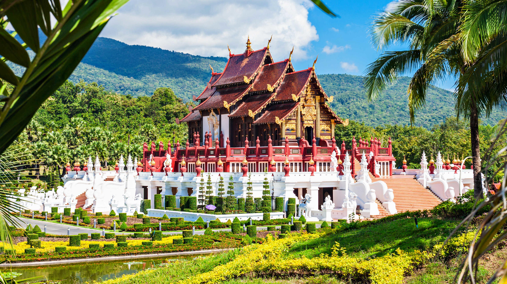
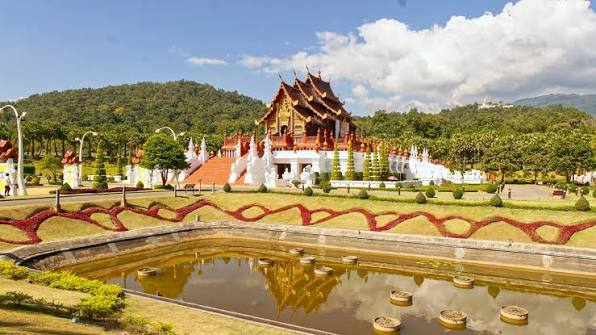
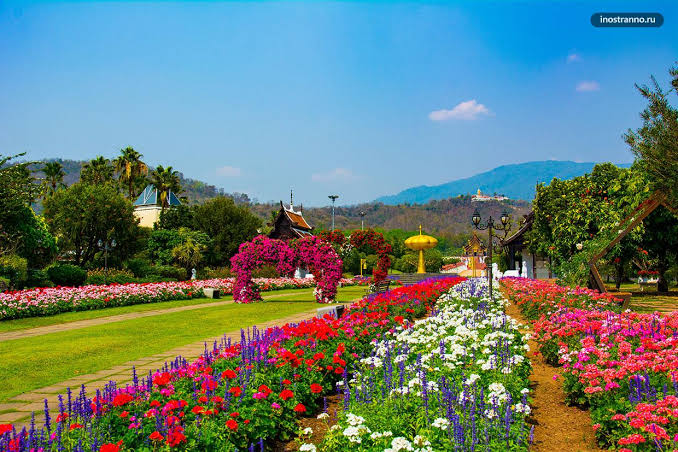
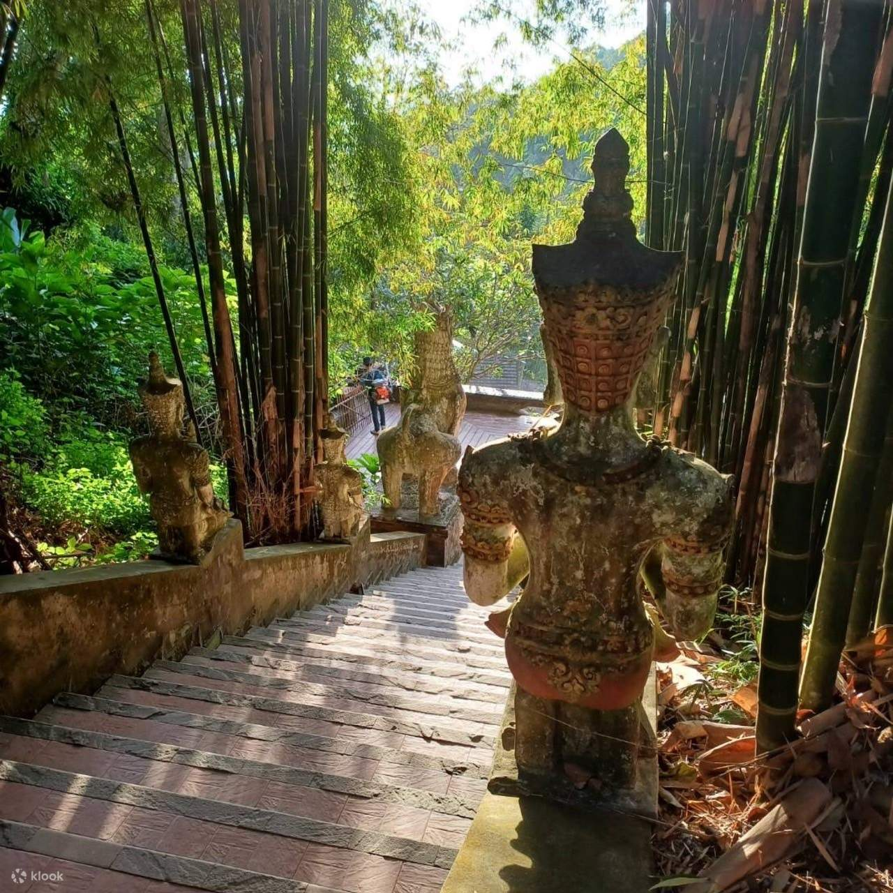
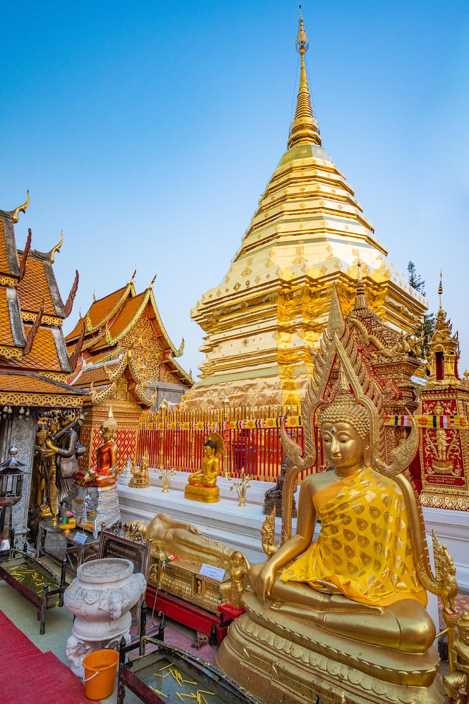

Королевский парк Ратчапруек

Королевский парк Раджапрук (Royal Park Rajapruek) — большой ботанический и ландшафтный парк в Чиангмае, созданный в честь 60-летия восшествия на престол короля Таиланда Пхумипона Адульядета. Парк известен своими красивыми садами, цветами, прудами, павильонами и традиционной тайской архитектурой.
Территория парка занимает около 80 гектаров, поэтому это место скорее подходит для продолжительной прогулки, чем для быстрого осмотра. Здесь собраны растения и элементы ландшафтного дизайна не только из Таиланда, но и из разных стран мира.
Где находится
Королевский парк Раджапрук находится на юго-западной окраине Чиангмая, недалеко от международного аэропорта Чиангмая и горы Дой Сутхеп.
От парка примерно:
- около 10–15 км до Старого города Чиангмая;
- около 5–6 км до храма Ват Пхра Тхат Дой Сутхеп по прямому маршруту;
- примерно 7–8 км до международного аэропорта Чиангмая;
- несколько километров до Королевского ботанического сада имени королевы Сирикит.
Королевский парк Раджапрук удобно включать в маршрут по юго-западной части Чиангмая, особенно если вы планируете поездку к Дой Сутхеп.
Стоимость посещения
Вход в Королевский парк Раджапрук — платный.
Стоимость билета может зависеть от категории посетителя и текущих условий парка. Также на территории можно воспользоваться дополнительным транспортом, который помогает перемещаться между удалёнными частями парка.
Перед поездкой лучше проверить актуальную стоимость билетов, так как цены и условия посещения могут меняться.
Время работы
Ежедневно примерно с 08:00 до 18:00.
Время работы отдельных зон и мероприятий может отличаться, поэтому перед посещением стоит проверить актуальное расписание.
- Утро: хорошее время для прогулки, когда ещё не слишком жарко и в парке меньше людей.
- День: температура становится выше, поэтому большую часть времени лучше проводить в садах и павильонах, чередуя прогулку с отдыхом.
- Вечер: парк постепенно закрывается, поэтому оставлять посещение на поздний вечер не стоит.
Лучше приезжать утром или во второй половине дня, когда жара становится немного менее ощутимой.
Как добраться
Королевский парк Раджапрук находится за пределами исторического центра Чиангмая, поэтому пешком добираться сюда неудобно. Оптимальный вариант — автомобиль или такси.
Такси или Grab
Один из самых удобных способов добраться до парка. Можно заказать Grab из Старого города или другого района Чиангмая. Поездка обычно занимает около 20–40 минут в зависимости от места отправления и дорожной ситуации.
Сонгтхэу
В Чиангмае распространены красные сонгтхэу — небольшие пассажирские пикапы, которые используются как общественный транспорт. Можно договориться с водителем о поездке непосредственно до парка.
Аренда автомобиля или скутера
Если вы планируете самостоятельно исследовать окрестности Чиангмая, до парка можно добраться на автомобиле или скутере. Рядом с парком предусмотрена парковка.
Туристическая экскурсия
Парк можно посетить в составе экскурсии по достопримечательностям Чиангмая. Такой вариант особенно удобен, если вы хотите совместить Раджапрук с Дой Сутхепом и другими местами в этой части города.
Что посмотреть в Королевском парке Раджапрук
В отличие от многих достопримечательностей Чиангмая, Раджапрук не имеет одного главного объекта. Основная ценность парка — огромная территория с садами, цветами, архитектурой и различными тематическими зонами.
Королевский павильон Хо Кхам Луанг

Одно из самых узнаваемых сооружений парка — традиционный тайский павильон Хо Кхам Луанг. Он расположен на возвышенности и окружён ухоженными газонами и садами.
Павильон выполнен в традиционном стиле северного Таиланда и считается главным архитектурным символом Королевского парка Раджапрук. Отсюда открывается красивый вид на окружающую территорию.
Тематические сады

На территории парка находится большое количество садов, посвящённых различным растениям и стилям ландшафтного дизайна.
- тайские сады;
- международные сады;
- сады с тропическими растениями;
- цветочные композиции;
- зоны с декоративными деревьями и кустарниками.
Каждая часть парка выглядит по-разному, поэтому прогулка по Раджапруку больше напоминает путешествие через несколько небольших парков.
Международные сады
Одной из особенностей Раджапрука являются тематические сады, созданные в различных национальных стилях.
Здесь можно увидеть элементы ландшафтного дизайна и архитектуры, характерные для разных стран. Это делает парк интересным не только для любителей природы, но и для тех, кто хочет посмотреть на сочетание различных культур в одном месте.
Цветочные сады

Парк особенно красив во время периода цветения. На территории высаживаются различные декоративные растения и цветы, благодаря чему здесь получается большое количество красочных мест для фотографий.
Если вы любите фотографировать природу, Раджапрук стоит посещать именно в сезон цветения, когда сады выглядят наиболее эффектно.
Прогулка по территории парка
Площадь Раджапрука довольно большая, поэтому полностью обойти парк пешком за короткое время может быть сложно.
Для удобства посетителей по территории курсирует внутренний транспорт. Это позволяет быстро перемещаться между основными зонами и не тратить слишком много сил на длинные переходы под жарким солнцем.
Что находится рядом
Королевский парк Раджапрук находится в районе, где расположено несколько интересных природных и культурных достопримечательностей.
Ват Пхра Тхат Дой Сутхеп
 |
 |
 |
Один из самых известных храмов Чиангмая находится на горе Дой Сутхеп. Храм знаменит золотой ступой и панорамным видом на город.
Можно совместить: Королевский парк Раджапрук → Дой Сутхеп → возвращение в Чиангмай вечером.
Королевский ботанический сад имени королевы Сирикит
Большой ботанический сад, расположенный в окрестностях Чиангмая. Здесь можно увидеть огромное количество тропических растений, деревьев и цветов, а также пройти по подвесным дорожкам среди леса.
Если вы любите природу, посещение двух парков и ботанического сада можно объединить в отдельную поездку за пределы центра города.
Международный аэропорт Чиангмая
Аэропорт находится сравнительно недалеко от Королевского парка Раджапрук. Поэтому парк можно включить в маршрут в день прилёта или вылета, если позволяет время и багаж можно оставить в отеле.
Важное для туристов
Не рассчитывайте быстро обойти весь парк. Территория Раджапрука большая, поэтому на полноценную прогулку лучше выделить несколько часов.
Берите воду. В Чиангмае может быть жарко, а прогулка по открытым садам занимает много времени.
Используйте солнцезащитный крем и головной убор. Значительная часть маршрута проходит под открытым небом.
Учитывайте сезон. Внешний вид цветочных садов сильно зависит от времени года. В период цветения парк выглядит особенно эффектно.
Уточняйте стоимость билетов перед поездкой. Цены и условия посещения отдельных зон могут изменяться.
Не обязательно ходить пешком по всей территории. Если становится жарко или вы хотите сэкономить время, можно воспользоваться внутренним транспортом парка.
Как лучше посетить Королевский парк Раджапрук
Лучше всего выделить на посещение Раджапрука несколько часов и совместить его с другими достопримечательностями юго-западной части Чиангмая.
Например:
- 09:00 — выезд из Чиангмая;
- 09:30 — Королевский парк Раджапрук;
- 09:30–12:30 — прогулка по садам и посещение павильона Хо Кхам Луанг;
- 12:30 — обед;
- 14:00 — поездка к Ват Пхра Тхат Дой Сутхеп;
- 15:00–17:00 — осмотр храма и прогулка по Дой Сутхеп;
- 17:00 — возвращение в Чиангмай;
- 18:00 — ужин и вечерняя прогулка по городу.
Такой маршрут позволяет за один день совместить прогулку среди садов Королевского парка Раджапрук с посещением одной из главных культурных достопримечательностей Чиангмая — храма на горе Дой Сутхеп.